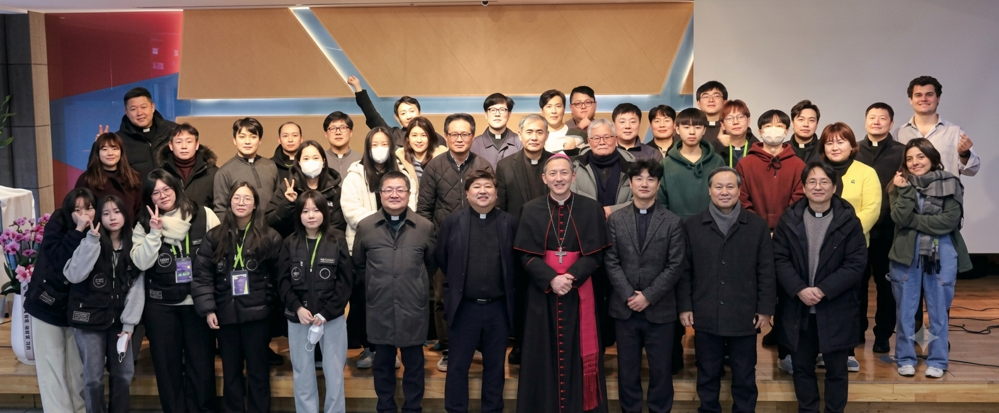

청년문화공간JU에 방문하신 것을 진심으로 환영합니다.
2010년 개관한 청년문화공간JU은 공연을 기반으로 운영되는 청년복합문화공간으로, 당시 천주교 서울대교구장 이셨던 정진석 니콜라오 추기경님의 젊은이들에 대한 관심과 사랑으로 설립되었습니다.
청년문화공간JU는 재단법인 서울가톨릭청소년회의 직영시설입니다.
청년문화공간JU는 젊은이들의 신앙 배움터이자, 종교를 넘어 이 시대 청년들의 현실, 위기, 행복 등을 다양한 문화예술 프로젝트를 통해 품고 지지하려 하며, 다양한 사업 및 행사를 꾸준히 주최하고 있습니다.